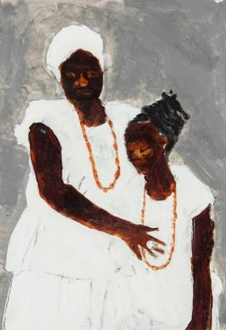
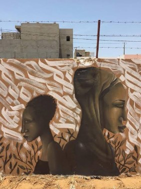
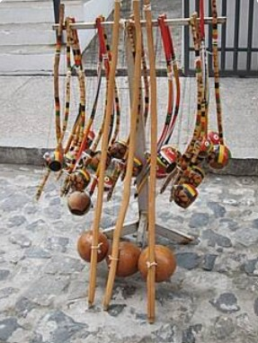

Em conformidade com a Lei nº 10.639/2003, este museu digital tem como objetivo salvaguardar o patrimônio material e imaterial afro-brasileiro, garantindo acesso democrático à educação e história.

Retratos e registros históricos da população afro-descendente.

Expressões artísticas contemporâneas e memória nos espaços urbanos.
Gastronomia como patrimônio imaterial e herança cultural de saberes.

O Berimbau e instrumentos que marcam o ritmo das manifestações rituais e culturais.